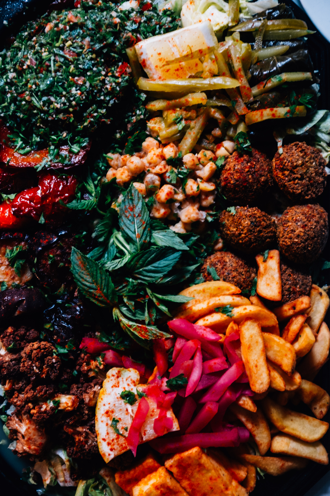

Welcome!
Food is a magnificent thing, but not all food is created equal. Some are delicious and others are outright atrocious, some may be plain, while others may be strange (or exotic.)
My Purpose
Whether you’re just bored or are one of the daring ones looking to spice up your life, it is my duty to prevent that boredom, or fulfill your sense of adventure. So keep clicking away and start discovering the strange foods around this big world!

A platter of food [1]